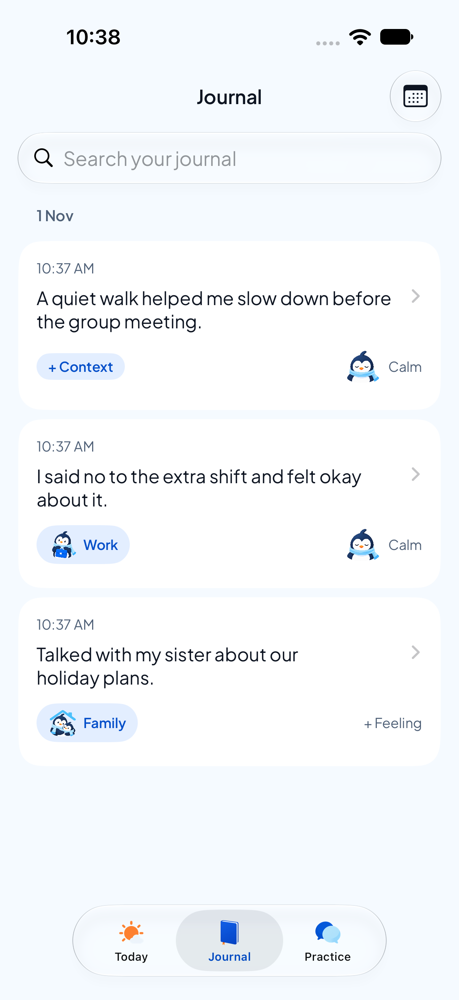
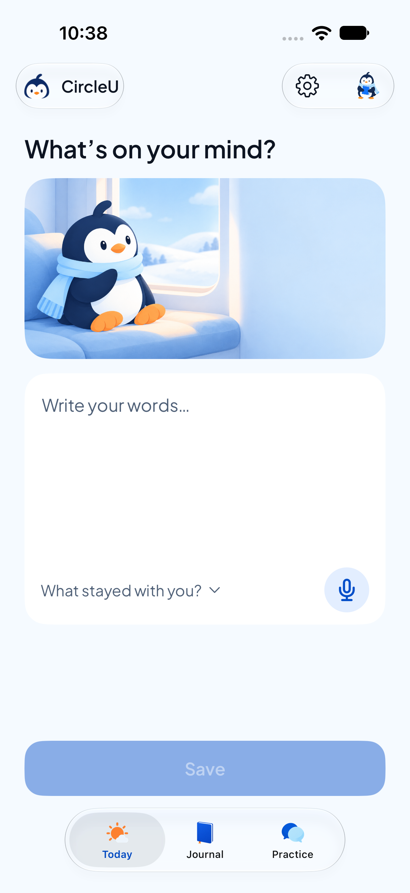
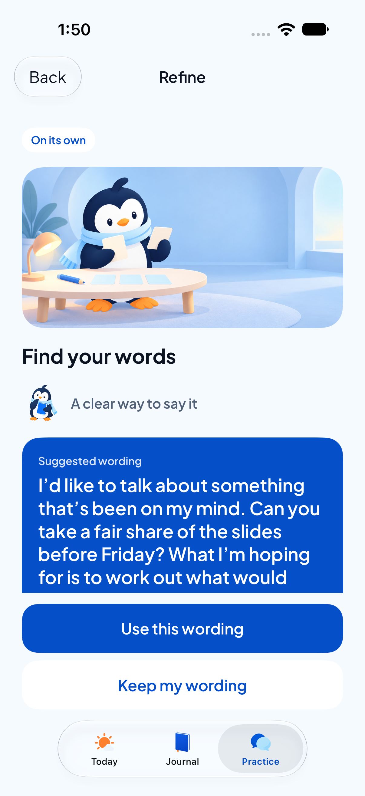

Some
conversations
stay with you
A private place to reflect on what happened and find your own words for what comes next.
- Write it down.
- Tag how it felt.
- Find your words.
Private by design. Kept on your iPhone.
A private place to reflect on what happened and find your own words for what comes next.
Private by design. Kept on your iPhone.


